3.9. App turismo
Ahora vamos a realizar una guía turística de tu localidad. Para ello, partiremos de una página principal donde aparecerá una foto descriptiva de dicha localidad y un menú de botones que nos lleven a información de monumentos, museos, rutas, restaurantes, alojamientos, etc.
En esta ocasión, es necesario que en una hoja diseñes el boceto de lo que va a contener la interfaz; además, podemos contar con varias pantallas que serán accesibles al pulsar cada uno de los botones.
Diseño
Para el diseño de la aplicación vamos a utilizar un menú desplegable que nos muestre las distintas opciones de información de nuestra app (monumentos, museos, rutas, etc).
 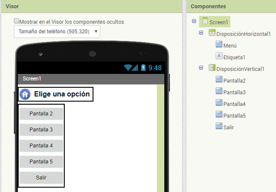
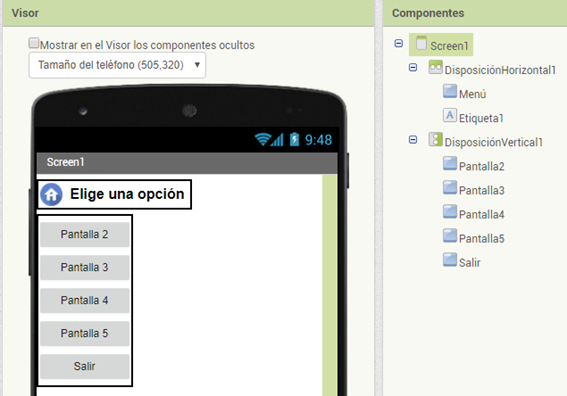
Como se puede ver en la imagen anterior para crear el menú desplegable henos utilizado una Disposición Horizontal donde hemos incluido un botón que hemos llamado Menú y una Etiqueta de texto.
En la Disposición Vertical incluimos tantos botones como opciones vayamos a incluir en nuestro menú. Aquí se han renombrado con el nombre de Pantalla, porque cada uno de ellos nos llevara a una pantalla nueva que tenemos que crear. Es conveniente que los renombréis con el nombre adecuado a la información que van a mostrar (monumentos, museos, rutas, etc).
El botón Menú lo vamos a personalizar con dos imágenes, una se va a mostrar cuando el botón esté sin activar y al activarse aparecerá otra imagen. Estas imágenes las puedes obtener de iconarchive.com
En el cuadro de búsqueda utiliza las palabras home y back y selecciona la imagen que más te guste. Debes descargar la de 24 pixel.
Crear nuevas ventanas
Para introducir la información que vamos a mostrar con nuestra app vamos a utilizar una ventana nueva para cada apartado.
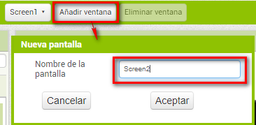
Es conveniente que asignéis como nombre de la pantalla el mismo que habéis utilizado para renombrar los botones que van a dar acceso a estas pantallas.
Bloques
Lo primero que vamos a hacer es que al iniciar la aplicación no se muestre el menú desplegable. Por lo tanto, su visibilidad la pondremos como falso.
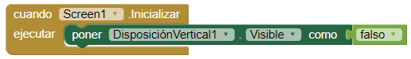
Para desplegar el menú utilizaremos el siguiente código:
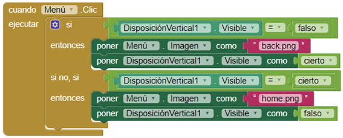
Nota: en los bloques de texto introducir correctamente el nombre de las imágenes que vais a utilizar.
Para poder acceder a cada una de las pantallas creadas tendremos que configurar cada uno de los botones que hemos puesto en la Disposición Vertical. El componente abrir otra pantalla … se encuentra en el primer apartado de los bloques Control.
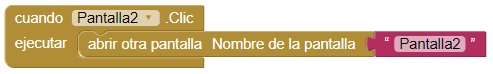
En las pantallas nuevas que hemos creado tenemos que colocar el menú desplegable que hemos creado en la primera. Así, podremos navegar por nuestra app desde cualquier pantalla.
El código lo podéis añadir a la mochila y así lo tenéis disponible en todas las pantallas.
Diseño de las pantallas
Para diseñar e incluir información en las distintas pantallas, se deben de tener en cuenta una serie de aspectos:
Imágenes. Procurar seleccionar imágenes con poco peso y resoluciones bajas. Si incluimos muchas imágenes de mucho peso la aplicación tardará más tiempo en cargar.
En los smartphones actuales son muy habituales dimensiones de pantalla de 320×240 (gama media/baja), 800×480 (muy típico en Android) y 960×640 (IPhone 4).
Para optimizar las imágenes podéis utilizar aplicaciones online como:
http://webresizer.com/resizer/?lang=es
Importante: La aplicación no debe ocupar más de 3 Mb, así que es fundamental optimizar las imágenes.
Texto. El texto debe ir colocado en etiquetas, ajustando el alto de las mismas para que se pueda leer correctamente. No incluir mucho texto.
Botón de ubicación. Cada lugar debe llevar un botón que nos muestre la ubicación del sitio en Google maps. Para configurar este botón debes incluir el componente ActivityStarter y configurarlo correctamente.
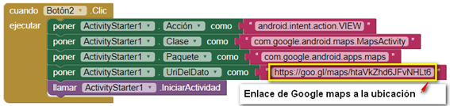
En la siguiente imagen puedes ver un ejemplo de cómo mostrar información de un monumento.
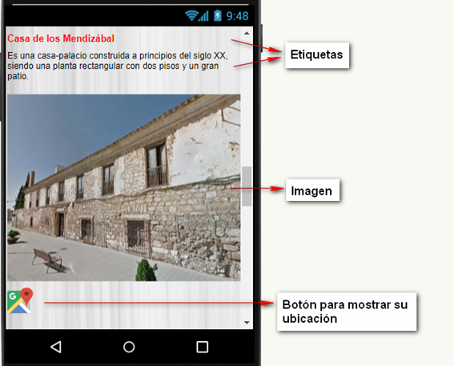
Activar la opción "Enrollabe" de las propiedades de todas las pantallas, ya que nos va a permitir navegar por las ventanas para poder ver toda la información.
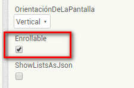
Sugerencias
- Personalizar los botones del menú desplegable incorporando un icono representativo.
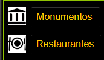
-
Añadir botones con enlaces a páginas web con información del lugar. Por ejemplo, si estoy poniendo información de un restaurante y éste tiene página web, puedo poner un enlace a su web.
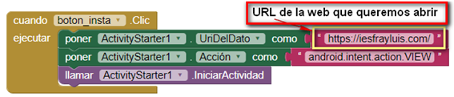
- Incluir en el menú desplegable una opción de contacto, donde aparezca información del ayuntamiento, dirección, mapa de ubicación, web, redes sociales, etc.
Obra publicada con Licencia Creative Commons Reconocimiento Compartir igual 4.0